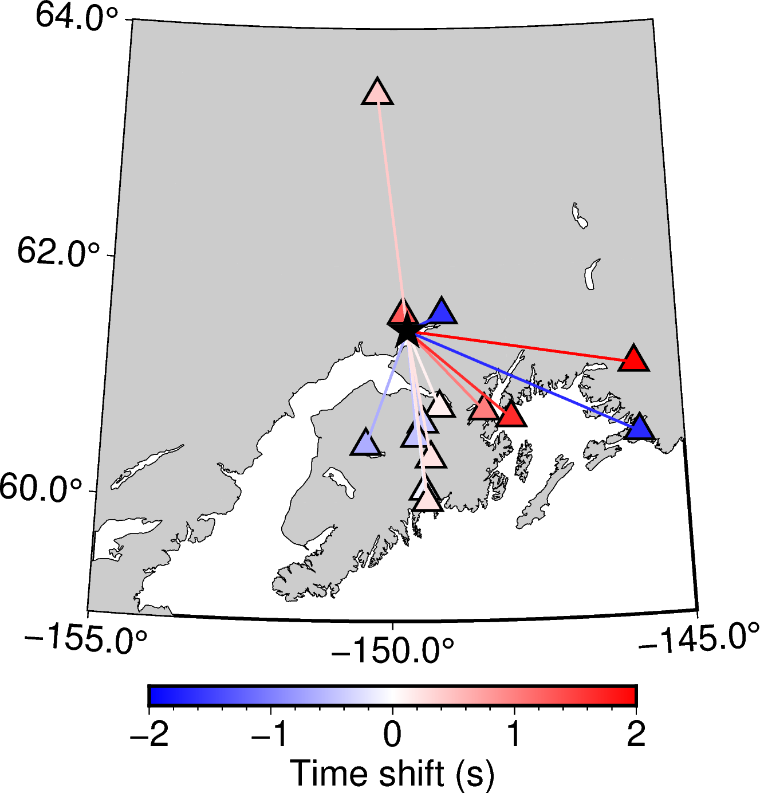

Customizing figures¶
MTUQ plotting functions aim for generality and ease of use. Sometimes, this results in a default figure that is a bit generic.
Fortunately, figure appearance is highly customizable, as illustrated below.
Time shift and amplitude ratio figures¶
To plot how time shifts, amplitude ratios, or other trace attributes vary geographically, we can pass the output of the misfit function’s collect_attributes method to a plotting function as follows:
plot_time_shifts(dirname, attrs, stations, origin)
Because we haven’t specified a map projection or other details, it’s no surprise that the resulting figure is quite generic:

To some extent, the above figure can be customized through optional input arguments to the default backend function. For argument descriptions, follow the links in the plot_time_shifts documentation, or see the default backend page directly.
In comparison, a more powerful approach is to overload the backend function completely:
plot_time_shifts(dirname, attrs, stations, origin, backend=custom_backend)
To illustrate, we have implemented a custom backend relevant to Silwal2016. The result of calling plot_time_shifts with this new backend is:
{kind=link}
Note
Frontend functions perform only data manipulation. All calls to graphics libraries (matplotlib, GMT, PyGMT and so on) occur in the backends, making even the choice of graphics library customizable.
Misfit and likelihood figures¶
Misfit and likelihood figures for force, moment tensor, depth and hypocenter can also be customized by user-supplied backends.